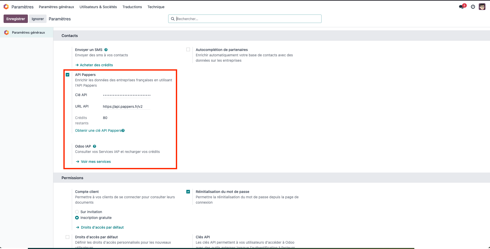

Fonctionnalités Principales
1. Enrichissement Automatique des Données
- Enrichissement automatique des fiches partenaires lors de la création
- Détection automatique des numéros SIRET/SIREN dans le nom du partenaire
- Mise à jour des informations légales et administratives via l'API Pappers
2. Informations Disponibles
Le module ajoute les champs suivants aux fiches partenaires :
Identification
- SIRET
- SIREN
- Numéro RCS (Registre du Commerce et des Sociétés)
- Type juridique (Personne morale/Personne physique)
Informations Légales
- Forme juridique
- Date de création
- Date d'immatriculation RCS
- Statut RCS (Inscrit/Non inscrit/Radié)
- Montant du capital
- Devise du capital
Informations Commerciales
- Description de l'activité
- Effectif
- Siège social (oui/non)
- État de l'entreprise (active/fermée)
- Date de fermeture (si applicable)
3. Filtres et Regroupements
Le module ajoute de nouveaux filtres dans la vue liste des partenaires :
- Sièges sociaux
- Entreprises actives
- Entreprises fermées
- Regroupement par type juridique
- Regroupement par forme juridique
- Regroupement par statut RCS
4. Configuration
Dans les paramètres de configuration (Settings > Général > Pappers API) :

- Activation/désactivation du module
- Configuration de la clé API Pappers
- Configuration de l'URL de l'API
- Suivi des jetons pay-as-you-go restants
- Option pour masquer l'onglet Pappers dans la fiche partenaire
5. Mapping des Champs
Le module intègre un système de mapping des champs personnalisable :
- Mapping par défaut des champs Pappers vers les champs Odoo
- Possibilité de personnaliser les mappings via l'interface d'administration
- Validation automatique des champs Odoo existants
6. Suivi des Jetons API
Le module intègre un système automatique de suivi des jetons API :
- Mise à jour automatique toutes les heures du nombre de jetons pay-as-you-go restants
- Affichage du solde dans les paramètres de configuration
- Possibilité de rafraîchir manuellement le compteur via un bouton dédié
- Journalisation des mises à jour et des erreurs éventuelles